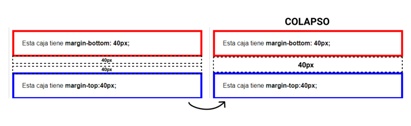

Box Model
El nombre 'box-model' (modelo de caja) se llama así porque, en los navegadores, todo se construye a partir de cajas.
Entonces, lo primero que debemos de entender, es que cada elemento que definimos en un documento HTML se mostrará en el navegador como una caja rectangular esta es la forma en que se representan todos los elementos, no existen elementos triangulares, redondos, poligonales etc. Todos los elementos en HTML por defecto son rectangulares ya que internamente el navegador dibuja un rectángulo.
Tipos de cajas
Cajas en bloque
Se comportan de la siguiente forma.
- La caja ocupa toda la línea i fuerza un saldo de linea al final
- La caja se extiende en la dirección de la lnea hasta el final. Generalmente significa que la caja tendrá la amplitud de su contenedor i ocupará el 100% del espacio disponible
- El padding, el border y el margen (Este último mantiene alejada la caja de otros elementos) se aplican sin problemas.
Cajas en línea
La cajas en línea se comportan de la siguiente forma:
- La caja solo ocupa el espacio que ocupa su contenido y no fuerza un salto de linea.
- Las propiedades width y heigth NO se aplican.
- El paddin, el border y el margen vertical se aplican pero, NO mantiene alejadas otras cajas en linea.
- El padding, el border y el margen horizontal se aplican y mantiene alejadas las demás cajas en linea.
Algunas propiedades de las Cajas
La propiedad display
Esta propiedad nos permite mostrar las cajas y qué comportamientos CSS se aplican para visualizar los elementos. Valores que puede tener:
- none: Se utiliza para motrar/ocultar los elementos html. No reserva el espacio que ocupará el elemento cuando está oculto, pero, cargará igualmente el contenido!
- inline
- block
- inline-block: Se comporta como un elemento inline, pero, que acepta aplicar width y heigth
- list-item
- table
- table-cell
- table-row
- flex
- inline-flex
- grid
- inline-grid
La propiedad visibility
La propiedad visibility tiene 2 posibles valores:
- idden
- visible
No confundir con display=none. visibility hidden desaparece el contenido, pero queda el espacio que este ocupaba.
La propiedad overflow (desbordamiento de contenido)
Qué pasará con el contenido que desborda de su caja contenedora?
Decidiremos cómo actuar con un de los tres valores:
- visible
- hidden
- scroll
Colapso de márgenes
Ahora bien, cuando dos elementos de bloque HTML tienen márgenes verticales que se tocan entre sí, estos dos márgenes colapsan en uno o se fusionan entre sí, y aquí dominará el más grande. Esto puede suceder en los siguientes casos.
Caso 1 (hermanosd adyacentes)
Cuando los desarrolladores hace algo así, espera que el margen de la primera caja y la segunda sea ç de 80px (40px + 40px), pero en realidad es de 40px. Los dos márgenes se tocan entre sí, por lo que se combinan o se colapsan el uno con el otro.
El margen inferior del elemento se colapsa con el margen superior del siguiente elemento.
Caso 2 - Un contenedor padre y su primer elemento.
En elementos anidados dentro de otros, el primer elemento descendiente colapsa su margen superior con el margen superior del elemento padre. Las reglas son las mismas que antes. Por ejemplo, si los dos márgenes superiores son positivos, el margen superior resultante será el de mayor valor.
Caso 3 - Un contenedor padre y su último elemento.
De forma análoga a lo que ocurre en el caso anterior con los márgenes superiores, los márgenes inferiores del contenedor y de su último elemento también colapsan en uno solo. Y también como en el caso anterior, el colapso de márgenes no se produce si el borde o el padding del contenedor es mayor a cero.
Caso 4 - Bloques vacíos
Los márgenes verticales de un bloque vacío (sin height ni padding ni contenido) también colapsan entre sí. Por ejemplo, si tenemos un bloque vacío con un margen top de 40px y un margen bottom de 20px, el elemento ocupará una zona de 40px de altura al colapsar sus propios márgenes verticales:
Volver al menu ☝️